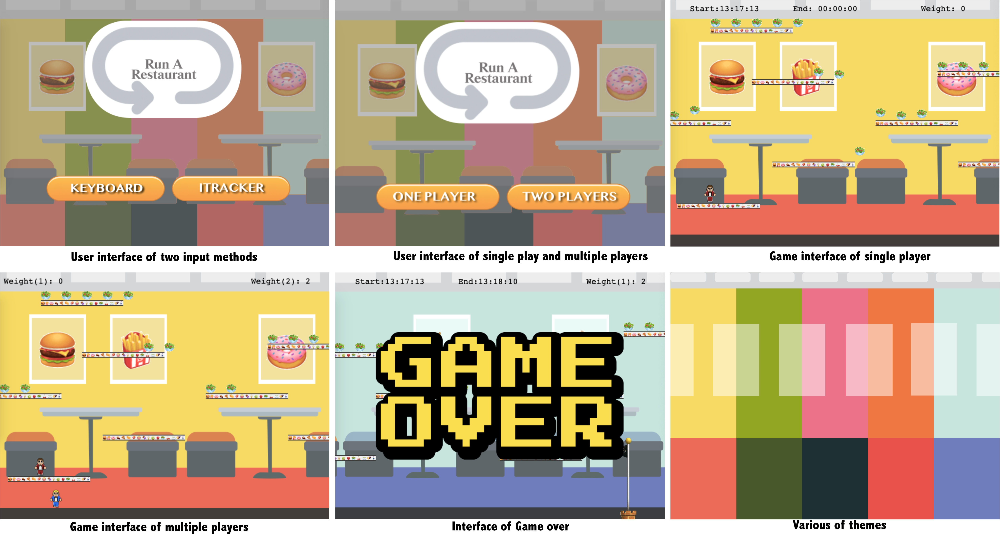

Accessible Game
Members: Yinbo Chen, Mutian Yan
This game is based on Phaser 3. And the main purpose to design this accessible game is providing the same gaming opportunities for disability or who have impairments. So in this game, we offered two input methods; keyboard for a normal person, and ITracker for disability. The accessible feature can make the game playing with anyone who can tilt their heads a little. The rule of this game is very simple, either the player who finished first wins or the player who gains more weight within a time.
System Requirement:
- You need a pre-installed server(MAMP) on your computer if you run on local.
- If you want to test the iTracker mode fully, we recommend pre-installed an eyetracker software.
- Make sure you have installed Python 3.X.
Reference:
The source code is based on Phaser's Tutorial.
Testing Video
Demo
Brainstorm

Support Applications
User Interface
